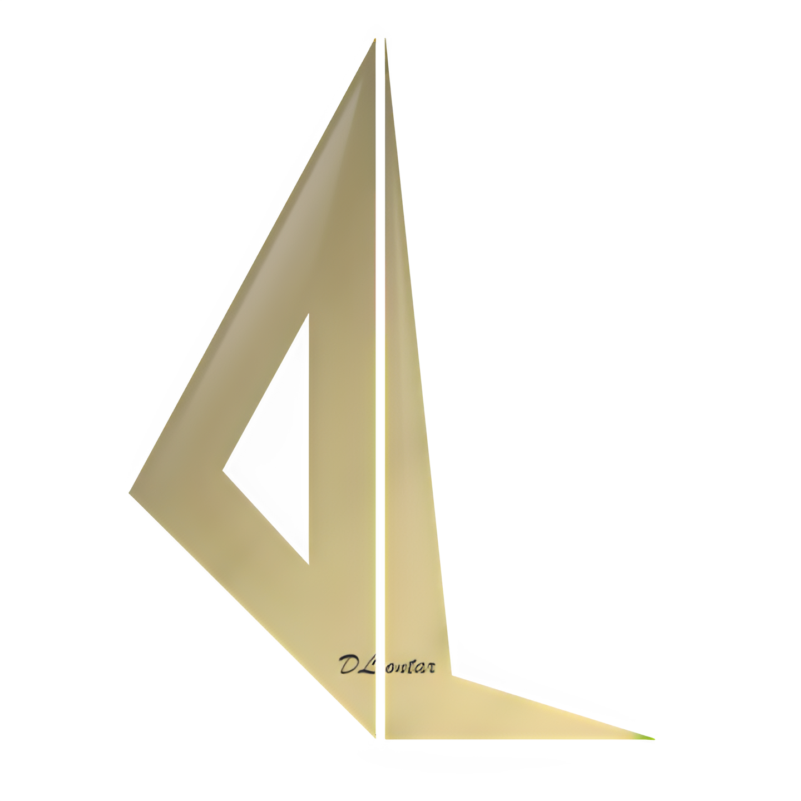

Visi dan Misi Nama Perusahaan
- Visi
Menjadi perusahaan yang mengangkat nilai-nilai, sejarah, seni, budaya, cerita dan segala bentuk kearifan
lokal serta filosofi warisan leluhur Nusantara agar tetap dilestarikan dan hidup sebagai jati diri bangsa
dengan dukungan dari inovasi dan teknologi terbaru.
- Misi
1. Meningkatkan jiwa patriotisme seluruh masyarakat Indonesia yang diwariskan para pahlawan dan leluhur
bangsa Indonesia. (Smart learning).
2. Membangun brand tempat-tempat bersejarah, benda-benda warisan leluhur, seni dan budaya kearifan lokal
agar menjadi lebih dipahami dan dihargai dengan bantuan inovasi teknologi. (Smart Branding).
3. Mengadaptasikan nilai seni, budaya, sejarah dan legenda warisan leluhur dengan perkembangan teknologi
terbaru untuk diinovasikan menjadi sebuah produk atau karya yang bermanfaat bagi kemakmuran dan kelestarian
masyarakat. (Smart economy).
Logo PT. Digital Lontar Nusantara

Arti Logo:
Huruf “D” yang ditulis terbalik maksudnya adalah di balik yang kita nikmati sekarang, dahulu ada perjuangan
para pahlawan dan huruf “D” kepanjangan dari Digital, karena DLontar bergerak di bidang digital, kemudian
diikuti dengan huruf “L” yang berarti lontar atau sejarah, serta warna emas berarti pemimpin, pemimpin yang
dimaksud di sini ialah menjadi yang terdepan di bidang teknologi.
Struktur Organisasi PT. Digital Lontar Nusantara

- Deskripsi Tugas
a. I Wayan Lovayana, S.E., M.M. : Memastikan seluruh divisi bekerja dengan baik sesuai aturan yang berlaku.
b. I Wayan Darya Kartika, S.Pi., M.Si. : Divisi promosi dan event menciptakan traffic untuk data tentang tahoma
dan bermain VR mengadakan kerja sama dengan lembaga hingga komunitas.
c. I M. Ochlan Pramana Putra, S.T. : Divisi operasional memelihara dan merawat peralatan device virtual
reality.
d. Luh Diah Rosa Cahayantari : Divisi promosi dan brand ambassador, memelihara dan meng-update social media
Tahoma Café dan DLontar Nusantara, dan mengurus endorsement.
e. Muhammad Rasyid : Membuat karakter inovasi sesuai dengan permintaan, memberikan texture visual effect, dan
membuat sound effect.
f. Putu Mega Arista : Bertanggung jawab atas penjualan VR secara penuh baik rental ke rumah, melakukan kegiatan
rental marketing di sekitar Tahoma VR, membuat iklan dalam bentuk video dan foto yang terkait dengan informasi
virtual reality.